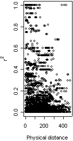

More on the permutation test for recombination
In the absence of recombination, which is the null hypothesis for the permutation test, all sites are linked. That means that adjacent sites are as tightly linked to one another as distant sites are to one another. Therefore, the null hypothesis predicts that there should be zero correlation between physical distance and linkage disequilibrium (LD).
There are several ways to measure LD. Three commonly-used statistics, which are used by permute, are r squared [1], D prime [2] and G4 [3, 4] (otherwise known as the four-gamete test [5]). permute calculates the correlation coefficient between physical distance and LD for all pairs of sites in your gene sequences. It does, however, exclude sites that are more than bi-allelic, because the LD statistics are not defined.
As an example, the figure shows a plot of r squared against physical distance (in base pairs) for all pairs of sites in a 480bp housekeeping gene in Neisseria meningitidis. The observed correlation coefficient is -0.255, indicating that LD decreases as physical distance increases, a pattern consistent with intragenic recombination.
A permutation test is performed to determine whether the observed correlation between physical distance and LD is significantly different from zero. For every permutation (the default number is 999), the sites are randomly re-ordered and the correlation coefficient is re-calculated. If n is the number of times, out of the N permutations, that the correlation coefficient was as large or larger (in magnitude) than that observed, then the p value is calculated as
p = (n + 1)/(N + 1)
In the example, p = 0.001. When p < 0.05 then the null hypothesis of no recombination can be rejected, meaning that recombination is detectable and phylogenetic-based methods should not be applied to your data.
There is one caveat in this permutation test. Under a second scenario, the correlation between physical distance and LD would be expected to be zero if recombination is sufficiently frequent that even adjacent sites are effectively unlinked. Therefore, if p > 0.05, an alternative explanation to zero recombination is that of ultra-high recombination. This does not affect the conclusion that if p < 0.05, then there is detectable recombination and you should not apply phylogenetic methods to the data.
- Back to Do I need omegaMap?
- Download ready-to-use executables
-
Download source code
- Bugs and version information
- Back to software
References
- Hill W. G. and A. Robertson (1968)
Linkage disequilibrium in finite populations.
Theor. Appl. Genet. 38:226-231. - Lewontin, R. C. (1964)
The interaction of selection and linkage. I. Genetic considerations; heterotic models.
Genetics 49:49-67. - Meunier, J. and A. Eyre-Walker (2001)
The correlation between linkage disequilibrium and distance. Implications for recombination in Hominid mitochondria.
Mol. Biol. Evol. 18:2132-2135. - McVean, G., P. Awadalla and P. Fearnhead (2002)
A coalescent-based method for detecting and estimating recombination from gene sequences.
Genetics 160:1231-1241. - Hudson, R. R. and N. L. Kaplan (1985)
Statistical properties of the number of recombination events in the history of a sample of DNA sequences.
Genetics 111:147-164.


- Bugs and version information